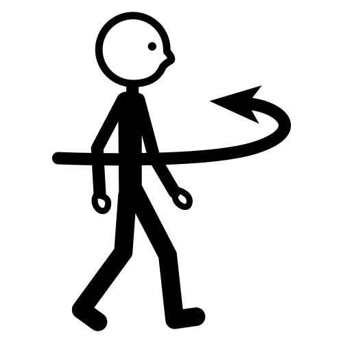

R-307. Parada y estacionamiento prohibido: Prohibición de parada y estacionamiento en el lado de la calzada en que esté situada la señal. Salvo indicación en contrario, la prohibición comienza en la vertical de la señal y termina en la intersección más próxima.
Referencia: Wikipedia
Anexo:Señales de tráfico de reglamentación de España
